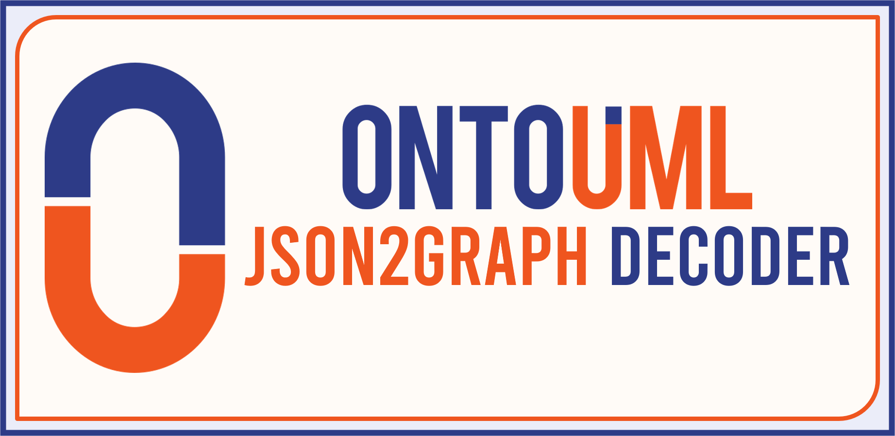

ontouml-json2graph
Contents:
The OntoUML JSON2Graph Transformation
API Reference
ontouml-json2graph
Welcome to ontouml-json2graph’s documentation!
View page source
Welcome to ontouml-json2graph’s documentation!

Contents:
The OntoUML JSON2Graph Transformation
Contents
Installation
Usage
Basic Syntactical and Sematic Validation
Permanent URLs and Identifiers
Related Projects
Development Contribution
Author
API Reference
json2graph
Indices and tables
Index
Module Index
Search Page